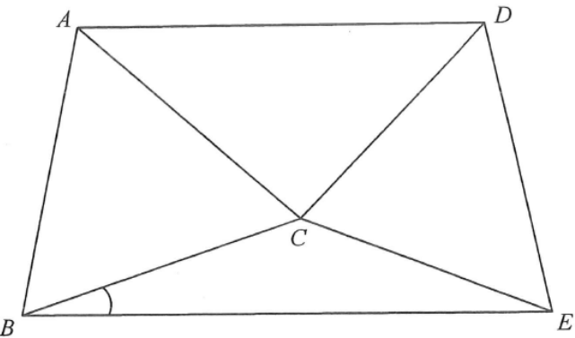

幾何 · 等邊三角形與圓形性質

$$\angle ACD=180^{\circ}-40^{\circ}-40^{\circ}=100^{\circ}$$
因 $\angle ADC=\angle CAD$，故 $AC=CD$。
$ABC$ 為等邊三角形，故 $AC=BC$；又 $CD=CE$（已知）。配合 $AC=CD$：
$$CA=CB=CD=CE$$
四點與 $C$ 等距，故 $A$、$B$、$D$、$E$ 都在以 $C$ 為圓心的圓上。
$\angle ACD=100^{\circ}$、$\angle DCE=78^{\circ}$，故
$$\angle ACE=100^{\circ}+78^{\circ}=178^{\circ}\ \text{（反角）}$$
對應的圓心角（反角）為 $178^{\circ}$。
$$2\angle ABE=178^{\circ}\quad\Rightarrow\quad\angle ABE=89^{\circ}$$
而 $\angle ABE=\angle ABC+\angle CBE=60^{\circ}+\angle CBE$：
$$\angle CBE=89^{\circ}-60^{\circ}=29^{\circ}$$
答案 D。選項 C 是把 $178^{\circ}$ 誤作 $168^{\circ}$ 左右的計算結果。